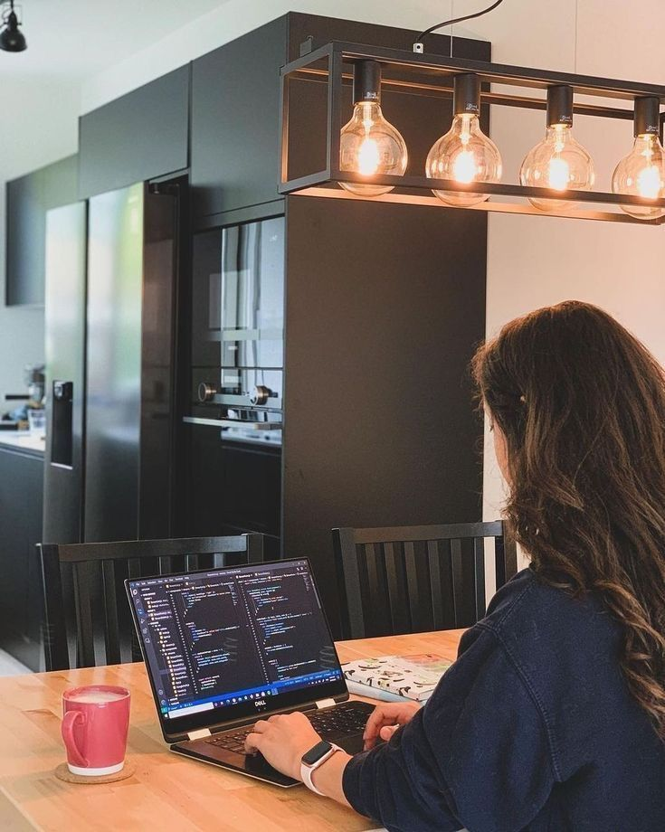

Writer | Researcher | Human Rights Activist | Future Diplomat

In the heart of Afghanistan's history filled with crises and complexities, in a distant and forgotten city called Mazar-i-Sharif, I was born in a land where war and poverty loomed like a dark shadow over its people. In this land, dreams can hardly become reality, but from a young age I had learned that no force could divert me from my path. My home was in a street filled with dust and endless hustle, where the sounds of life could be heard. I remember those days when my mother and father always listened to my words with endless care and attention, even when their hearts were filled with endless worries. Our home was filled with love and warmth, but just as my family’s embrace was a refuge for me, outside of it was a world full of threat and crisis that was rapidly growing in the shadow of darkness.
Focusing on literature, research, and social sciences with distinction in language studies.
Completed leadership, peacebuilding, research methodology, and public speaking courses.
Active contributor to peacebuilding projects, promoting dialogue and conflict resolution across youth communities.
United Leaders Global in Partnership with International Council on Human Rights, Peace and Politics